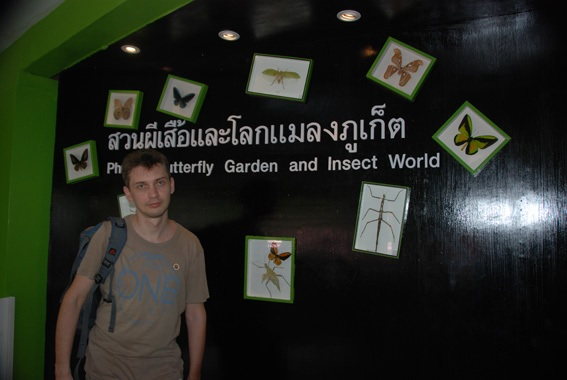

Выставка бабочек на Пхукете
Выставка бабочек на острове Пхукет, хоть и расположена в центре города, но найти ее нелегко, да и популярностью у туристов ползуется не особо. Из подобных выставок, это самая большая по площади, разделена на несколько зон: познавательная часть - на основе выставки из сухих бабочек, насекомых в террариумах, макетов и самого сада бабочек.
Нас интересовала непосредственно экспозиция живых бабочек и потому первой части сада мы уделили мало времени.
Площадь сада бабочек 500 кв.м. , высота 4-5 метров. Сад разделен на несколько зон - места, где бабочки откладывают яйца, экспозиция гусениц на кормовых растениях, инкубатора и сам сад бабочек.
С технической точки зрения - все продумано до мелочей: идеальная высота, достаточная площадь, наличие водоемов с декоративными беседками, дополнительное увлажнение, хороший пешеходный маршрут, прекрасный подбор растений.
Виды бабочек из Центральной Америки представлены слабо, в основном местные виды из Филиппин. Концентрация бабочек высокая только в помещении, где бабочки откладывают яйца. На основной экспозиции их количество ненамного больше, чем в природе.
Данная экспозиция будет познавательна для специалистов - можно наблюдать весь цикл развития бабочек, также представлено большое количество гусениц на кормовых растениях.
В остальном - дизайн и прочее, очень посредственны.